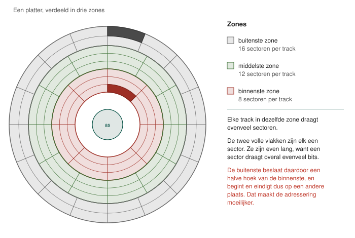
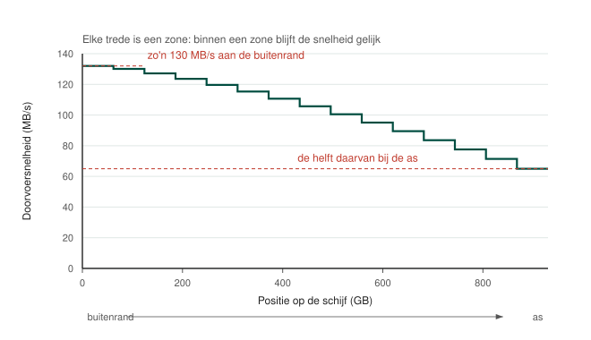

Het probleem is natuurlijk dat het aantal sectoren op de tracks beperkt wordt tot het aantal sectoren dat past op de binnenste, kortste track. Hierdoor verliest men veel capaciteit. Met behulp van Zone Bit Recording (ZBR) lost men dit probleem op door het aantal sectoren per track te laten variëren.

Men verdeelt de tracks onder in zones (rood, groen, grijs) waarbij elke track in een zone dezelfde hoeveelheid sectoren heeft. Dit maakt adressering er niet makkelijker op maar zorgt wel dat de capaciteit van een harde schijf significant wordt uitgebreid.
Zoals je kan zien is iedere zone eigenlijk een lokale variant van de CHS adressering. Op alle sectoren worden nog evenveel bits opgeslagen, maar zoals je duidelijk kan zien zijn er veel meer sectoren in de buitenste zones dan in de binnenste.
Hopelijk zie je nu ook in waarom dit de adressering moeilijker maakt: een sector in de buitenste zone heeft een andere start- en eindpositie dan een sector in de binnenste zone.
Gezien de buitenste zones meer data kunnen bevatten is het interessanter om data aan de buitenkant van de harde schijf te plaatsen. Dit resulteert in kleinere seek-time en dus hogere doorvoersnelheden. Wanneer we deze figuur beschouwen zien we overduidelijk een dramatische impact op de doorvoersnelheid.

In de buitenste zones wordt een snelheid van zo'n 130 MB/s gehaald terwijl dit in de binnenste sectoren wordt gehalveerd. Dit verklaart ook deels waarom een besturingssysteem trager begint te werken. Hoe meer je hebt geïnstalleerd, hoe meer bestanden op de binnenste tracks komen te staan en hoe langzamer het systeem werkt.
Wie een SSD heeft geïnstalleerd heeft daar natuurlijk allemaal geen last van.